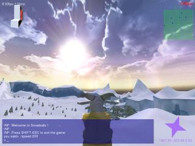
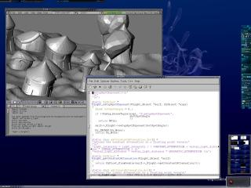
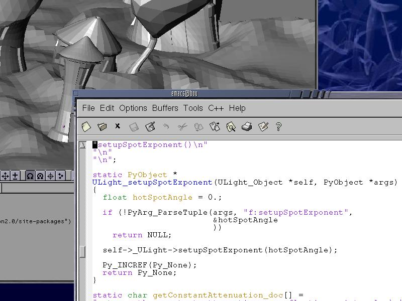
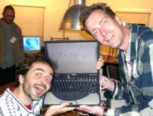
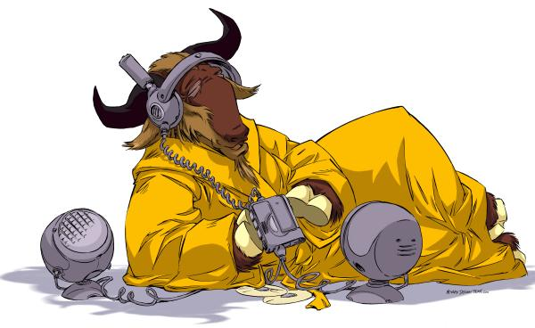

(page 1)

- Speaker for the Free Software movement
(page 2)
It is a about ...
- ... Free Software, ethics and freedom
- ... creating games based on Free Software
- ... Blender filling the last gap

[Developing python bindings between Blender and NeL]
(page 3)

(page 4)
What is Free Software ?
- The idea that all software must be associated to four freedoms.
- The freedom to run the program, for any purpose (freedom 0).
- The freedom to study how the program works, and adapt it to your needs (freedom 1). Access to the source code is a precondition for this.
- The freedom to redistribute copies so you can help your neighbor (freedom 2).
- The freedom to improve the program, and release your improvements to the public, so that the whole community benefits. (freedom 3). Access to the source code is a precondition for this.
(page 5)
How to create Free Software
- Write a piece of code ;-)
- You are the author ? You are the copyright holder.
- With great power comes great responsibilities.
- You have the power to license your program.
- You can't just say "this is not copyrighted".
- You can't just say "this is public domain".
- Files without copyright or license information are indeed proprietary.
- You'd be a fool to believe people telling you not to worry about these boring details.
(page 6)
Free Software has heavy weight competitors
- Last year, Free Software was acknowledged as a serious competitor by proprietary software vendors.
- Two actions were launched.
- Discourage people from using the GNU GPL license.
- Encourage people to mix proprietary software with Free Software.
- Probably the only subject on which proprietary software vendors and the Free Software Foundation agree : mixing proprietary software with Free Software and abandonning the GNU GPL is the most efficient way to seriously harm Free Software.
- The GNU GPL does not allow anyone to take away the freedom that was given by you.
- Using 100% Free Software solutions makes you independant of any third party.
(page 7)
Free Software author duties
- Protect the freedom granted with a protective license such as the GNU GPL.
- Make sure licensing information is properly applied.
- Include the full text of the license.
- Copyright notice in each file : Copyright (C) Foo Bar
- License notice in each file.
- Copyright and license notice in toplevel README file.
- Arrange for the software to run without a need to use proprietary software.
- It does not matter if it's slower. Free Software DRI drivers for ATI 7500 are not fast but they do the job.
- It does not matter if the Free Software is not functionaly superior. Most people would say Blender is not as mature as proprietary software competitors.
(page 8)
Face the ethics
- The technical myth, revisited
- Quality, Efficiency, Reliability
- Free Software is an ethical matter
- If you think a Free Software program will make your life easier, you may be disapointed.
- If you rely on a Free Software program to preserve your freedom, it will not fail you.
(page 9)
Game companies
- The two largest French game companies went down in the past 6 month
- Missing people at GDC and GDC Europe
- Crowded IGDA meetings in Paris
- How is this going to end ?
(page 10)
Online Games
- GDC 2002 lively panel about online games
- Not about selling software licenses
- Service based business model
- Original game or license based game ?
- Providing online services versus providing CD
- The switch is far from easy for existing companies
(page 11)
Ethics meets business
- Decide that Free Software is a matter of ethic
- Decide to produce an online game
- Decide to make a living with online games
- Chose the GNU GPL license for all software, data, documentation
- Chose to license all artistic work under a proprietary license
- Live on monthly fees to connect to the online server
(page 12)
Thin ice
- 3D acceleration : ATI 7500 with stock XFree-4.2 and DRI
- Devices abstraction : SDL
- AI, Network, Graphical toolkit, Game logic, Databases, Generic game development support, file format converters ...
(page 13)
Missing the most important part
- Developers and lawyers think a game is a software
- Artistits and game designers very well know that excellent games have little to do with software
- 3D modellers for artistits
- Vertex or innovation3d are Free Software
- The organized scarcity of 3D modellers
- 20 years ago, compilers were rare too
(page 14)
Blender fills the gap
- A popular and fully functional 3D modeller
- We've had GNU CC since decades, Gimp since years
- We now have Blender, 3D modelling becomes available to everyone
- We can now run game companies that are true to the ethics of Free Software

First GNU GPL'ed binary of blender, October 11, 5pm GMT.
(page 15)
Conclusion
- Congratulations & eternal gratitude from:
- Auke Van Balen already mentionned top priorities regarding Python
- Reuse and build on the game engine as Erwin Coumans suggested
- Debian & other GNU/Linux packages
- Level editing (or World Editing) as Normal Lin is going to explain
- Forget that 3D modelling ever was an issue
(page 16)
Thank you for listening.

(page 17)